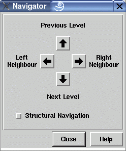

Navigator Dialog Window
This dialog window is used to move the focus in a graph. By starting at a selected node, both the neighbour and relative nodes can be reached in all four directions. To work with the navigator, exactly one node has to be selected in the graph. If no node or more than one node is selected, then the navigator does not work and beeps when the arrow buttons are pressed. By pressing one of the four arrow buttons in the dialog window, the focus (i.e. node selection) moves from the selected node to the left/right neighbour node or the nearest node at the next/previous level, according to the chosen direction. The navigator beeps when there is no such target node, e.g. nodes at the topmost level does not have any parents. Movement from the old to the new node is shown with animation by scrolling smoothly to the new node. This animation can be switched off or controlled in speed with menu Options/General Settings....
By switching the orientation with menu Layout/Orientation, the functions behind the arrow buttons of the navigator are also rotated to get proper results for navigation. This is emphasized by changing the text labels of the navigator window which are next to the four arrow buttons. So in a graph with "Left to Right" orientation, the text label "Previous Level", used in top-down orientations, becomes "Upper Neighbour".
The navigator supports an alternative mode which can be activated by selecting the "Structural Navigation" check button. This mode considers the structure of the graph rather than the geometrical relationships of the current layout. So in structural mode, pressing the left arrow button does not move to the left neighbour node, but to the nearest sibling at the left side of the currently selected node. In the same way, pressing the up and down arrow buttons moves to the nearest parent and child. Here, nearest means the relative node with the smallest distance on the x-axis (coordinates on the y-axis are not considered in this case).
These examples are valid using top-down layout orientation. In other orientations, the navigation buttons are rotated as well, so in a graph with left-to-right layout (where the parents are always at the left side of their children), pressing the left arrow button in structural mode will move to the nearest parent node (instead of the nearest left sibling node in top-down orientations). The intuitive text labels next to the arrow button always characterize the functions behind the buttons for all orientations, so you do not have to worry about this more or less complicated issue.
Navigation can also be used without this dialog window by simply pressing the cursor keys in a base window, refer to keyboard usage for details.
Dialog Elements of the Navigator Window
Note: for layout orientations other than top-down, the functions behind the arrow buttons are also rotated to get proper results for navigation. So the up arrow will always moves upwards.
-
Up Arrow
Starting at the currently selected node, pressing this button moves to the nearest node in upward direction (or to the nearest related node in structural navigation mode). -
Down Arrow
Starting at the currently selected node, pressing this button moves to the nearest node in downward direction (or to the nearest related node in structural navigation mode). -
Left Arrow
Starting at the currently selected node, pressing this button moves to the nearest node in left direction (or to the nearest related node in structural navigation mode). -
Right Arrow
Starting at the currently selected node, pressing this button moves to the nearest node in right direction (or to the nearest related node in structural navigation mode). -
Structural Navigation
This check button switches between structural navigation mode, where the structure of a graph is considered, and the default mode, where only geometrical relationships in a graph visualization are considered for navigation (read above for details). Using this check button takes an influence on the operations behind the arrow buttons in this window. -
Close
Push button to close the navigator dialog without performing any action. -
Help
Push button to start the online help system with this page.